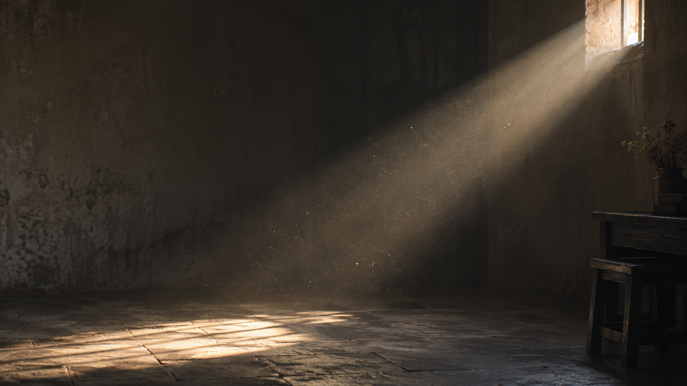
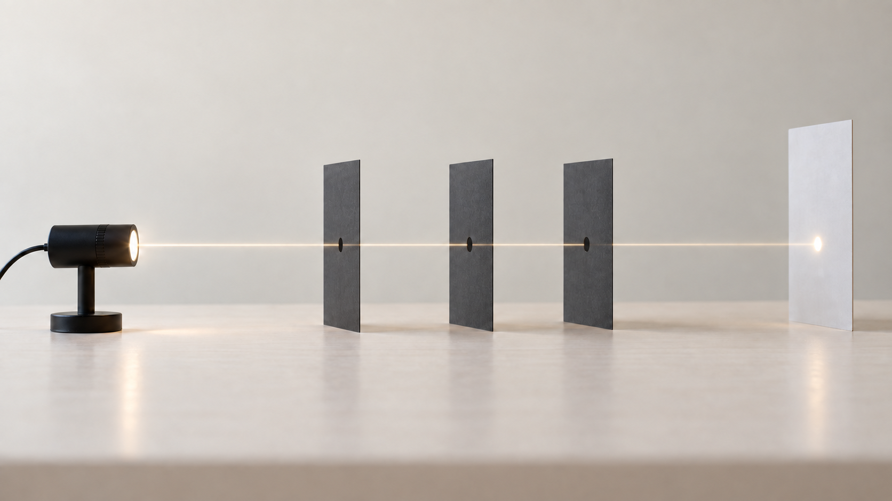
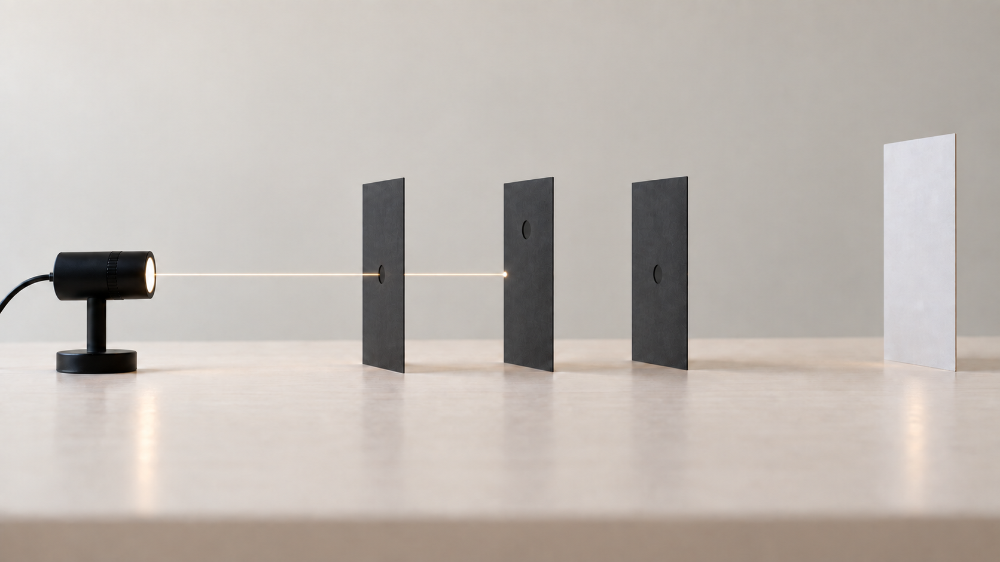
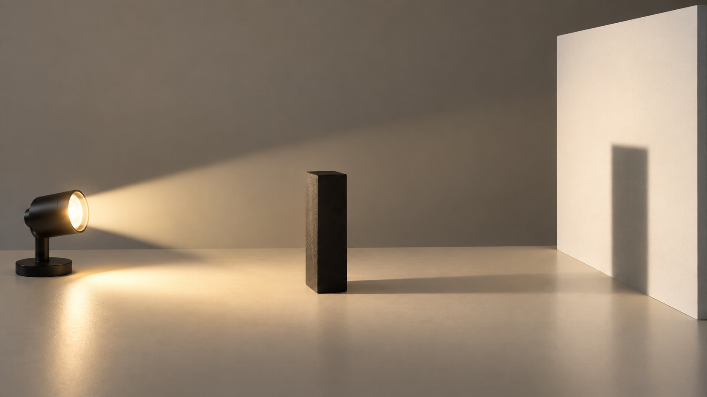
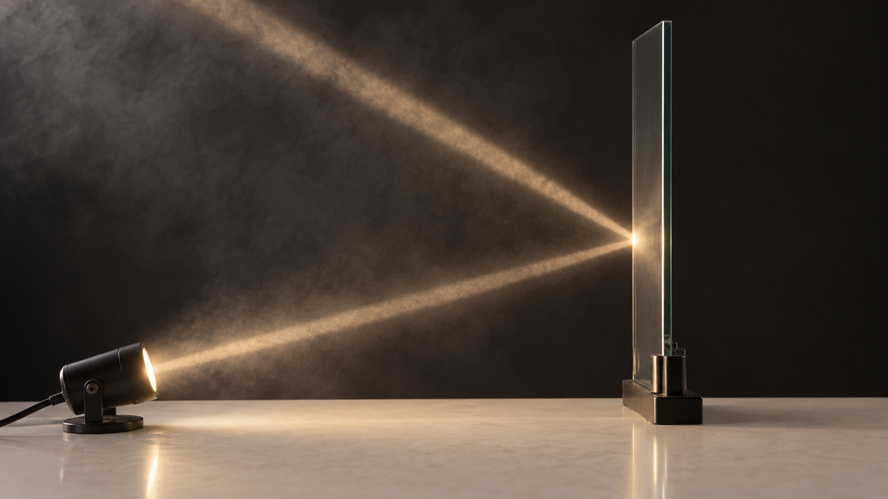
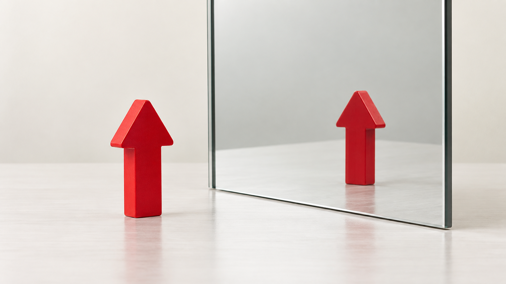
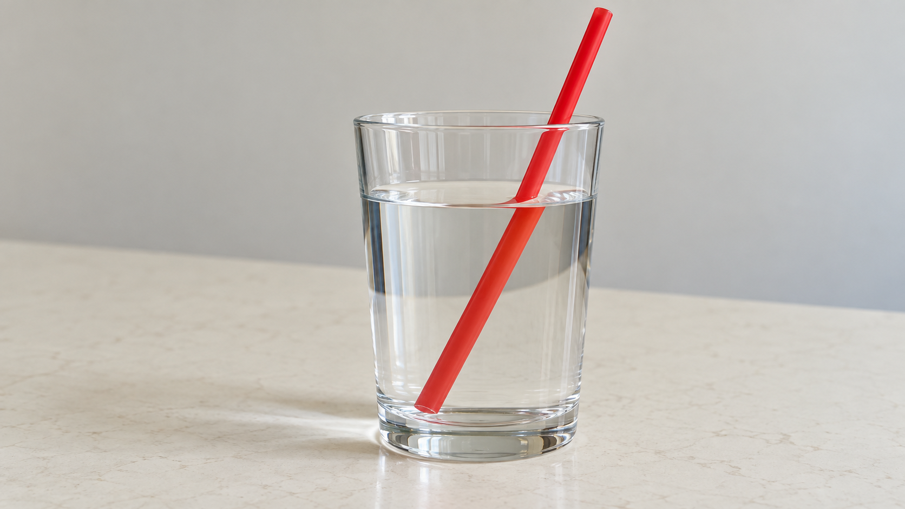
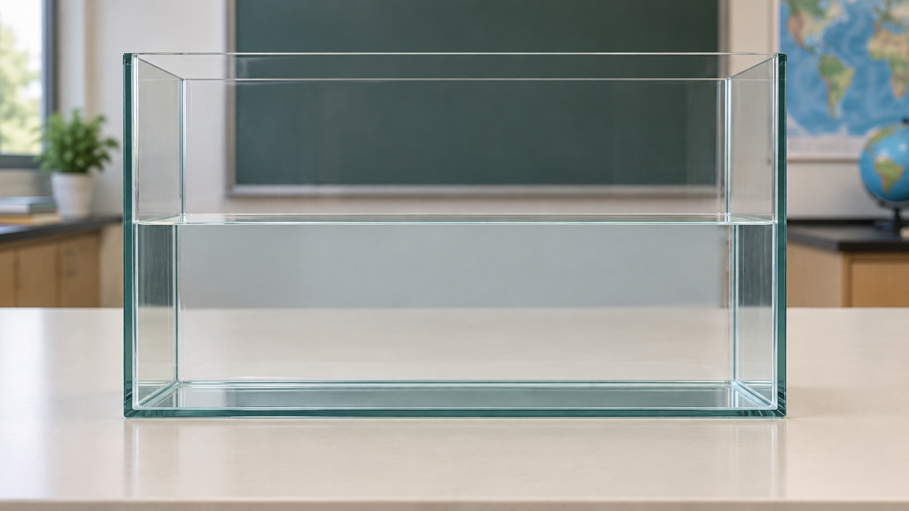
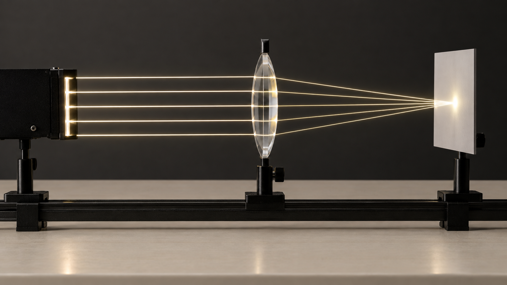
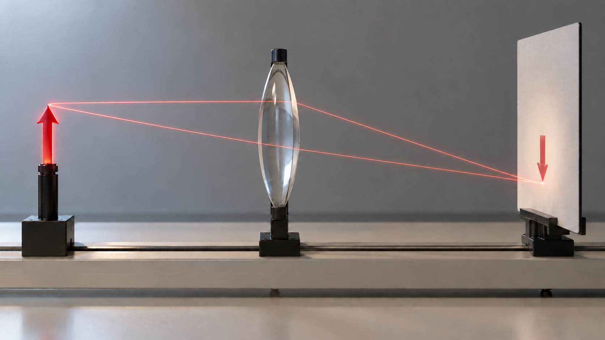

中1 理科・物理
光

中1 理科 光SeeD EDUCATION
光の通り道が見える
見えているもの部屋を横切る光の筋
問い光はどんな道を進む？
中1 理科 光SeeD EDUCATION
穴をそろえると、光は通る

板の穴一直線に並べる
観察結果向こう側に光が届いた
中1 理科 光SeeD EDUCATION
真ん中の穴をずらす

変えたこと真ん中の穴を上へずらす
観察結果光が届かない
わかったこと光はまっすぐ進む
中1 理科 光SeeD EDUCATION
本が見えるまでの光の道
①光源から本へ光が当たる
②本で反射した光が目に届く
覚えること光が目に届くと見える
中1 理科 光SeeD EDUCATION
光をさえぎると影ができる

光の進み方光源からまっすぐ広がる
観察結果物体の後ろに影ができる
理由光が物体にさえぎられる
中1 理科 光SeeD EDUCATION
光の進み方と見え方
光の直進光はまっすぐ進む
光源自分で光を出すもの
物が見える条件その物からの光が目に届く
中1 理科 光SeeD EDUCATION
鏡に当たった光は、向きを変える

光を当てる鏡の一点へ向かう
観察結果鏡から別の向きへ進む
中1 理科 光SeeD EDUCATION
この現象を「反射」という
鏡の面
鏡へ進む光入射光
鏡から進む光反射光
覚えること光がはね返る＝反射
中1 理科 光SeeD EDUCATION
角度は「垂直な線」から
鏡の面
基準鏡の面に垂直な線
入射光の角度入射角
反射光の角度反射角
中1 理科 光SeeD EDUCATION
入射角と反射角は等しい
鏡の面
① 法線から測る入射角30°＝反射角30°
② 角度を変える入射角60°＝反射角60°
反射の法則入射角＝反射角
中1 理科 光SeeD EDUCATION
鏡の奥にあるように見える

像の向き物体と同じ向き
像の位置鏡から同じ距離の奥
中1 理科 光SeeD EDUCATION
光の反射
反射境界ではね返ること
角度入射角＝反射角
鏡の像鏡の奥にあるように見える
中1 理科 光SeeD EDUCATION
ストローが折れて見える

観察結果水面でずれて見える
問いストローは本当に曲がった？
中1 理科 光SeeD EDUCATION
進む向きが変わる＝屈折

空気 → 水水中で法線に近づく
水 → 空気空気中で法線から離れる
覚えること境界で向きを変える＝屈折
中1 理科 光SeeD EDUCATION
反射と屈折に分かれる
水 → 空気 ／ 入射光を100として
水面に光を当てる
反射 —
屈折 —
角度を変えて、光の行き先を見よう。
平らな水面・白色光・偏光なしの近似値
中1 理科 光SeeD EDUCATION
空気側の角度が大きい
角度は境界面に垂直な線から測る
水と空気の境界に注目
水側—
空気側—
まず水から空気へ進む光を見よう。
中1 理科 光SeeD EDUCATION
水と空気を通る光
屈折境界で進む向きが変わる
角度空気側の角度が大きい
全反射水側から出るときに起こる
中1 理科 光SeeD EDUCATION
平行な光は一点に集まる

光が集まる点焦点
レンズの中心から焦点まで焦点距離
中1 理科 光SeeD EDUCATION
スクリーンに倒立の像が映る

スクリーンの観察上下が逆の像
この像の名前実像
中1 理科 光SeeD EDUCATION
物体を動かすと、像はどう動く？
赤：軸と平行に入り、焦点を通る光黄：レンズの中心を通る光
スクリーンを正面から見る
物体の位置
像・見る位置
像
中1 理科 光SeeD EDUCATION
レンズの右側からのぞくと？
赤：軸と平行に入り、焦点を通る光黄：レンズの中心を通る光
スクリーンを正面から見る
物体の位置
像・見る位置
像
中1 理科 光SeeD EDUCATION
凸レンズと像
焦点の外側倒立の実像
物体を遠ざけると実像は近く・小さく
焦点の内側正立・拡大の虚像
中1 理科 光SeeD EDUCATION
光の道をたどろう
直進光はまっすぐ進む
反射境界ではね返る
屈折境界を通ると向きが変わる
凸レンズ位置で実像・虚像が変わる
中1 理科 光SeeD EDUCATION